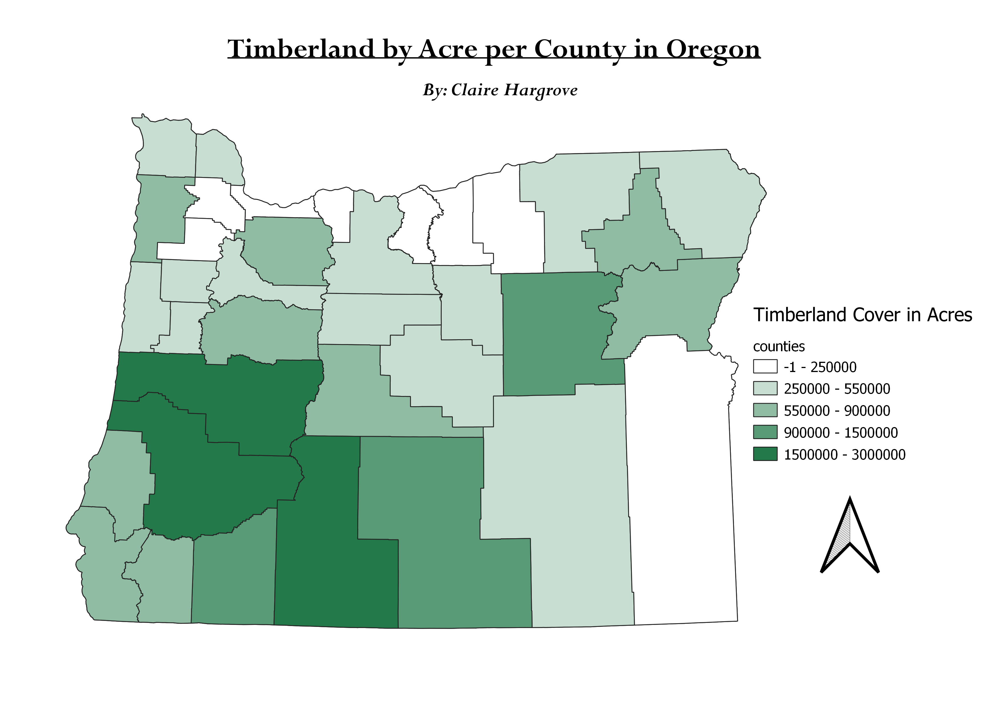

Homework 7: Make a Chloroplath or Proportional Symbol Map
By: Claire Hargrove
This map describes the land (in acres) covered by timberland by county in Oregon State. Forestry and timber is such a large part of industry in Oregon and as I am very interested in forestry and conservation, I wanted to find a data set that would allow me to see how much of the state is covered and where timberland is located. The map includes a North but not a scale bar, when adding it the map would not allow due to the units of measurement being acres. Based on the map, you can see that the southwest portion of the state is more adept for timberland. This area geographically is closer to the Redwood Forests and is largely covered by trees. The Northern portion of the state is not as prone to timberland, geographically, these counties are more lived in than other parts of the state and contain populous cities/towns.

Data used for this project
CSV cleaned dataset
Link to shapefile
Link to Data Website